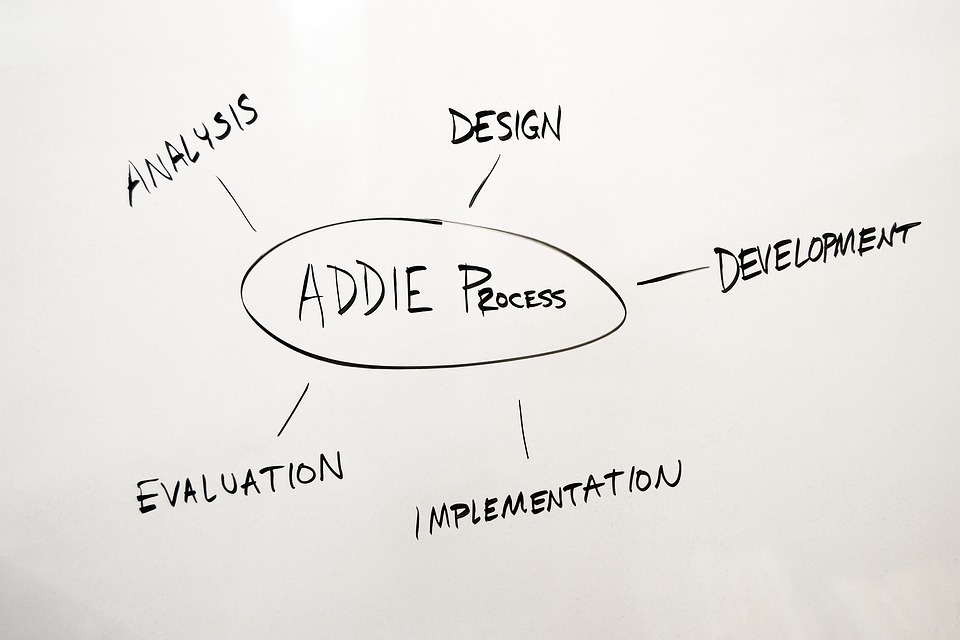

When a major Regional Visitors Authority, which consisted of five major tourism divisions and facilities, rolled out their new customer service training program, they were interested in incorporating e-learning to amplify and reinforce their defined priorities for delivering world-class customer experiences.
The resulting product was custom and branded on-demand online learning content built with Adobe Captivate and hosted on SkillSoft (LMS).
Adult learners have unique needs, and e-learning presents and outstanding opportunity to create a learner-driven environment that empowers learners and encourages greater engagement. This product included a set of six highly interactive core modules and a library of mico-learning activities that reinforce key topics in bite-size pieces (to maximize retention).
Creating authentic, on-brand content was also key. Canned e-learning solutions that feel completely disconnected from the organization’s values don’t resonate with learners. This project was a true extension of the Regional Visitors Authority. It features real success stories and simulations and scenarios that mirror actual challenges employees face in their work. This online learning content library serves as an extension of the organization’s current training—like a virtual performance “coach” that provides timely, on-demand training.
Project deliverables included:
- Needs assessment
- Course outline
- Course storyboards
- Development and testing
- LMS Admin & deployment
Healthcare Claims Recovery Department Training Program

A small team at a mega Fortune 50 Healthcare company had been training new additions via on-the-job coaching and shadowing. When plans were made to scale, the small team was looking at aggressive growth plans and expansion to multiple offices. A standard training program to ensure the right skills were trained, and learner proficiency was measured, was in order.
The resulting product was a four-week training program designed for classroom and virtual facilitation. Facilitator guides included delivery instruction for either scenario. The program also included practice simulations developed in Adobe Captivate, Level 2 and Level 3 evaluations, and supplemental materials (e.g., PowerPoint, activities, training calendar, etc.).
As the lead Instructional Designer on this project, work began with analysis and needs assessment. This included observation and task analysis, thorough review of all standard operating procedures and staff and stakeholder interviews.
After program design and development, I facilitated the pilot class on-site. Adjustments were incorporated as needed through a collaborative effort between the Design team and department subject matter experts and leadership. The result was a winning program that yielded above-target results during the post-training proficiency period. This was a significant part of helping this department achieve its plans for expansion.